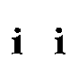

Typoems
Anipoems

Other works:
Deseo - Desejo - Desire
3 erotic Anipoems (2002)
Discipline (2002)
A Busy Day (2001-2002)
The Circus (2000-2002)
Some Anipoems and a
late Typoem
About the Author
©1997-2003 Ana María Uribe
Waterfall
Bowling
Autumn
A Cutting Poem
Guggenheim Museum
Decline
A Train in Motion
From Parmenides to J. P. Sartre
The Power of Reflection
It's Raining
A Host of Halfties
Bubbles
A Shoal of Mermaids 2
A Shoal of Mermaids 3
A Shoal of Mermaids 4
A Herd of Centaurs 2
A Herd of Centaurs 3
Gym 1
Gym 2
Gym 3
Dry Red Leaves
Pas de deux
A View from a Train
More Centaurs
More Centaurs 2
Rebound 1
Rebound 2
Rebound 3
Rebound 4
Spring
Spring 2
Winter
Winter 2
Zipper
Zipper 2
Zipper 3
Zipper 4
Zipper 5
Zipper 6
Ladders
Românã
Español